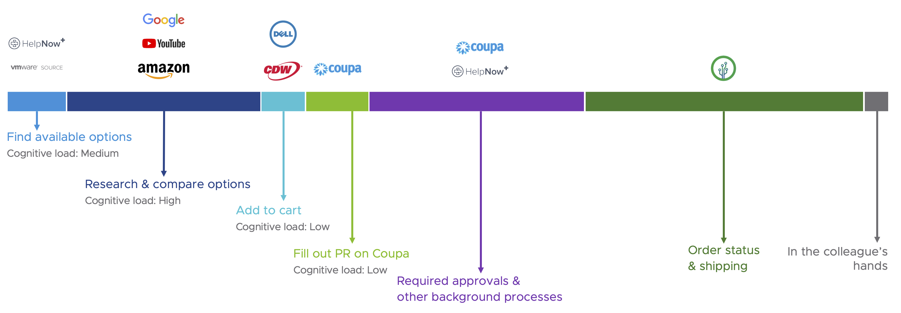

Oasis Store
Summary
Improved the user experience of VMware's IT hardware procurement process globally and enabled colleagues to choose the right device best suited for their workspace.
Along with VMware's IT hardware team, I evaluated and quantified the shortcomings of using a ticketing system to order hardware. I crafted the UI of the Magento store which now provides a consumer-grade online shopping experience to every VMware colleague.
The homepage of the Oasis Store
Challenges
Using a ticketing system to order hardware posed the following challenges to colleagues:
- Confusion around entry point - There are multiple entry points for a colleague to start the hardware procurement process, such as the IT webpages on the company's intranet, ticketing system or directly on the hardware vendor's website.
- No clarity of available devices - Depending on the colleague's point of entry, accessing a comprehensive list of approved devices can be challenging. Even within the intranet website, there are different catalogs.
- Dependency on external sites - To make informed decisions, colleagues search the product on Google, Amazon or YouTube. Cognitive load is increased when remembering model numbers while switching between tabs.
- Too many applications - It is very taxing to juggle between multiple entry points, review sources and procurement platforms and it is confusing to know when to use which tool.
Target Audience
The new process would be used globally by all VMware employees to procure IT hardware. However, the old process varied region by region. I partnered with our user research team to understand the region-specific pain points and challenges.
User Research
We conducted usability tests where the participant was presented with 4 common procurement scenarios in order to capture metrics such as time to completion, task success and error rates. We also kept track of the number of different web applications and browser tabs they had to open to complete each scenario.
After reviewing the data collected, we are able to illustrate the old process as shown below.
Insights from Interviews
- It takes a long time to find available devices and choose the right one device for their workspace.
- There's a significant increase in cognitive load when trying to compare options.
- There's a lack of transparency in the process after an order is placed. Colleagues are unaware of approval status or shipping updates.
Based on the insights above, we identified the user requirements for the new process. These requirements influcenced the IT hardware team's decision to implement an online store powered by Magento.
Concept
The Oasis Store is an online technology store that provides a frictionless, end-to-end experience for ordering IT equipment - all within a single browser tab. It is the face of the new IT procurement process.
Product Details
Product Category
Product Comparison
Benefits provided by Oasis Store
- Clarity of entry point - It's the single entry-point for the procurement process and provides a consistent and intuitive experiences for colleagues in all regions.
- Reduced cognitive load - New features such as Oasis Expert Opinion and product comparisons enable all employees to make better, informed decisions while purchasing a product.
- A single touchpoint - Reducing the number of applications involved down to one well-designed portal will make maintenance easier for the business.
The new workflow can be illustrated as shown below, with most steps being completed within the same application.
The new procurement process
Product features influenced by user research & strategy
- Oasis Expert Opinion - A brief description about the pros and cons of each product by an Oasis team member. It helps guide colleagues to pick a device that is right for them.
- Product specifications & comparison - product specifications are provided on the same page along with the capability to compare with similar products. This avoids the need to go to external websites.
My role at this stage was to customize the theme of the online store CMS to adhere to VMware's brand guidelines. I also wrote code for new widgets that added functionality on the homepage and in the sidebar of other pages.
How VMware Benefits From The Oasis Store
$7,500,000+
Lifetime Sales
Since September 2021
$155,000+
Annual Cost Savings
Globally
~350
Man Hours Saved
Per Month
How usable is Oasis Store?
To validate the efficacy of the provided functions and identify potential areas for improvement, I partnered with the research team to conduct a series of tests to determine base usability of key task flows. We also conducted surveys and provided a feedback form in the online store to gather qualitative and quantitative data.
We recruited 10 usability test participants and presented them with different scenarios: order a laptop & peripherals, change default shipping address, compare 2 or more products, order a custom laptop and approve team requests.
Here's what we concluded based on input from the research participants:
- Users typically like the overall look of the new Oasis Store and find navigation easy and understandable.
- Colleagues do not need much time to get around the store and search for the necessary equipment.
- Thinking about their previous experience when ordering devices, colleagues share that the experience with Oasis Store is a definitive improvement.
Challenges and Areas of Improvement
- Improve transparency by providing order approval and shipping status on the homepage.
- Keep track of each colleague's devices to provide even more personalized device recommendation and management experience